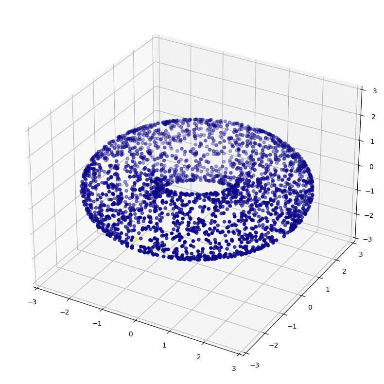
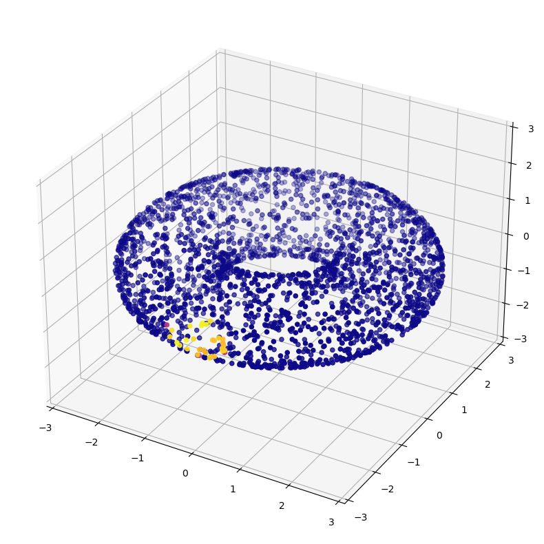

from diffusion_curvature.utils import random_jnparray
from diffusion_curvature.distances import pairwise_euclideanGraph Creation Utils
::: {#cell-1 .cell 0=‘d’ 1=‘e’ 2=‘f’ 3=‘a’ 4=‘u’ 5=‘l’ 6=‘t’ 7=’_’ 8=‘e’ 9=‘x’ 10=‘p’ 11=’ ’ 12=‘g’ 13=‘r’ 14=‘a’ 15=‘p’ 16=‘h’ 17=‘s’}
import numpy as np:::
Written by Alex Tong & Guillaume Huguet for KrishnaswamyLab/HeatGeo: Embedding with the Heat-geodesic dissimilarity. Adapted for diffusion curvature.
This uses the marvelous library PyGSP to handle graph creation and basic graph signal processing.
By default we use the alpha-decay kernel from PHATE. We implemented other types of kernels, to use them you need to install our package with [dev].
::: {#cell-3 .cell 0=‘e’ 1=‘x’ 2=‘p’ 3=‘o’ 4=‘r’ 5=‘t’}
import graphtools as gt
import pygsp
from typing import Union
from graphtools.matrix import set_diagonal, to_array
from scipy import sparse
from sklearn.preprocessing import normalize
import numpy as np
try:
# optional dependencies
import scanpy as sc
import umap
except ImportError as imp_err:
sc = imp_err
umap = imp_err:::
::: {#cell-4 .cell 0=‘e’ 1=‘x’ 2=‘p’ 3=‘o’ 4=‘r’ 5=‘t’}
def diff_op(graph):
"""
Compute the diffusion operator for a pygsp graph.
"""
# assert isinstance(graph, pygsp.graphs.Graph)
# K = set_diagonal(graph.W, 1)
diff_op_ = normalize(graph.W, norm="l1", axis=1)
return diff_op_
def kernel_degree(graph):
"""
Compute the kernel degree for a pygsp graph.
"""
assert isinstance(graph, pygsp.graphs.Graph)
K = set_diagonal(graph.W, 1)
return to_array(K.sum(axis=1)).reshape(-1, 1)
def diff_aff(graph):
"""
Compute the diffusion affinity for a pygsp graph.
"""
assert isinstance(graph, pygsp.graphs.Graph)
K = set_diagonal(graph.W, 1)
row_degrees = kernel_degree(graph)
if sparse.issparse(K):
# diagonal matrix
degrees = sparse.csr_matrix(
(
1 / np.sqrt(row_degrees.flatten()),
np.arange(len(row_degrees)),
np.arange(len(row_degrees) + 1),
)
)
return degrees @ K @ degrees
else:
col_degrees = row_degrees.T
return (K / np.sqrt(row_degrees)) / np.sqrt(col_degrees)
###------------------------Graphs Classes ----------------------------###
def get_knn_graph(X, knn=5, **kwargs):
return pygsp.graphs.NNGraph(X, k=knn)
def get_alpha_decay_graph(
X,
knn: int = 5,
decay: float = 40.0,
anisotropy: float = 0,
n_pca: int = None,
**kwargs
):
return gt.Graph(
X,
knn=knn,
decay=decay,
anisotropy=anisotropy,
n_pca=n_pca,
use_pygsp=True,
random_state=42,
).to_pygsp()
def get_scanpy_graph(X, knn=5, **kwargs):
if isinstance(sc, ImportError):
raise ImportError("Scanpy is not installed.")
adata = sc.AnnData(X)
sc.pp.neighbors(adata, n_neighbors=knn)
w = adata.obsp["connectivities"]
return pygsp.graphs.Graph(w)
def get_umap_graph(X, knn=5, **kwargs): # knn default to 15 in UMAP
if isinstance(umap, ImportError):
raise ImportError("UMAP is not installed.")
umap_op = umap.UMAP(n_neighbors=knn, metric="euclidean")
umap_op.fit(X)
w = umap_op.graph_.toarray()
return pygsp.graphs.Graph(w):::
The Differentiable Kernel
::: {#cell-6 .cell 0=‘e’ 1=‘x’ 2=‘p’ 3=‘o’ 4=‘r’ 5=‘t’}
import jax
import jax.numpy as jnp
def generic_kernel(
D, # distance matrix
sigma, # kernel bandwidth
anisotropic_density_normalization,
):
W = (1/(sigma*np.sqrt(2*jnp.pi)))*jnp.exp((-D**2)/(2*sigma**2))
D = jnp.diag(1/((jnp.sum(W,axis=1)+1e-8)**anisotropic_density_normalization))
W = D @ W @ D
return W:::
::: {#cell-7 .cell 0=‘e’ 1=‘x’ 2=‘p’ 3=‘o’ 4=‘r’ 5=‘t’}
def diffusion_matrix_from_affinities(
W
):
W = W + jnp.eye(len(W))*1e-8
D = jnp.diag(1/jnp.sum(W,axis=1))
P = D @ W
return P:::
X = random_jnparray(100,9)
D = pairwise_euclidean(X,X)
W = generic_kernel(D,0.7,0.5)
P = diffusion_matrix_from_affinities(W)import jax.numpy as jnpjnp.max(jnp.array([1, 0.4, 1, 3])/jnp.array([1e-8,1,1,1]))Array(1.e+08, dtype=float32)jnp.array([1, 0.4, 1, 3])/jnp.array([0,1,1,1])Array([inf, 0.4, 1. , 3. ], dtype=float32)Graph Testing
from diffusion_curvature.datasets import *
from diffusion_curvature.utils import *
from diffusion_curvature.heat_diffusion import *
X_torus,ks = torus(5000,use_guide_points=True)G_torus = get_alpha_decay_graph(X_torus, decay=None, knn=30, anisotropy=1, )
P = diff_op(G_torus).todense() # is sparse, by default
P = jnp.array(P)
Pt = jax_power_matrix(P,30)
plot_3d(X_torus, P[0])
plot_3d(X_torus, G_torus.P[0].toarray())
np.allclose(diff_op(G_torus).toarray(), G_torus.P.toarray())False
A = G_torus.K.toarray()
P_homemade = diffusion_matrix_from_affinities(A)np.allclose(P_homemade, G_torus.P.toarray(), atol=1e-4)TrueP_homemadeArray([[0.0334698 , 0. , 0. , ..., 0. , 0. ,
0. ],
[0. , 0.03510092, 0. , ..., 0. , 0. ,
0. ],
[0. , 0. , 0.03167431, ..., 0. , 0. ,
0. ],
...,
[0. , 0. , 0. , ..., 0.03027344, 0. ,
0. ],
[0. , 0. , 0. , ..., 0. , 0.03521152,
0. ],
[0. , 0. , 0. , ..., 0. , 0. ,
0.03522947]], dtype=float32)G_torus.P.toarray()array([[0.03346897, 0. , 0. , ..., 0. , 0. ,
0. ],
[0. , 0.03508904, 0. , ..., 0. , 0. ,
0. ],
[0. , 0. , 0.03166429, ..., 0. , 0. ,
0. ],
...,
[0. , 0. , 0. , ..., 0.03027342, 0. ,
0. ],
[0. , 0. , 0. , ..., 0. , 0.03520697,
0. ],
[0. , 0. , 0. , ..., 0. , 0. ,
0.03523469]])PArray([[0.96891046, 0. , 0. , ..., 0. , 0. ,
0. ],
[0. , 0.9683374 , 0. , ..., 0. , 0. ,
0. ],
[0. , 0. , 0.9701013 , ..., 0. , 0. ,
0. ],
...,
[0. , 0. , 0. , ..., 0.9696673 , 0. ,
0. ],
[0. , 0. , 0. , ..., 0. , 0.9694721 ,
0. ],
[0. , 0. , 0. , ..., 0. , 0. ,
0.96949625]], dtype=float32)G_torus.K.toarray()array([[0.00111111, 0. , 0. , ..., 0. , 0. ,
0. ],
[0. , 0.00118906, 0. , ..., 0. , 0. ,
0. ],
[0. , 0. , 0.00100781, ..., 0. , 0. ,
0. ],
...,
[0. , 0. , 0. , ..., 0.00097656, 0. ,
0. ],
[0. , 0. , 0. , ..., 0. , 0.0011491 ,
0. ],
[0. , 0. , 0. , ..., 0. , 0. ,
0.0011491 ]])!nbdev_export/usr/bin/bash: line 1: nbdev_export: command not found